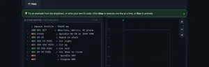
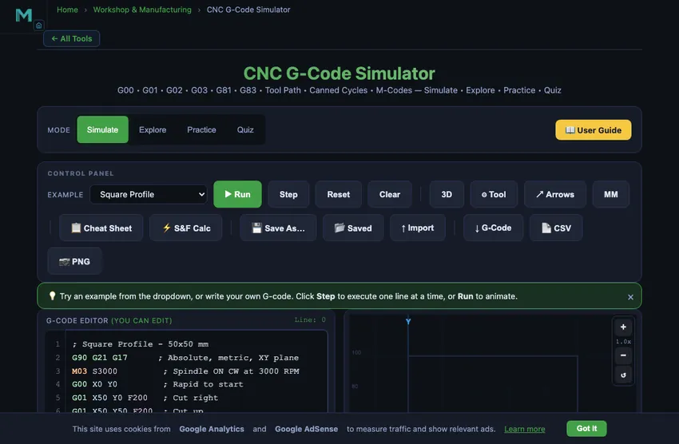

CNC G-Code Simulator
3D Model — CNC G-Code Simulator
Free online CNC machine simulator — type G-code and watch it run. G00, G01, G02, G03, canned cycles, 3D tool-path view, error checking. No signup.
G00 • G01 • G02 • G03 • G81 • G83 • Tool Path • Canned Cycles • M-Codes — Simulate • Explore • Practice • Quiz
G-Code Quick Reference
Motion & Positioning
| Code | Description | Syntax |
|---|---|---|
| G00 | Rapid positioning | G00 X_ Y_ |
| G01 | Linear interpolation (cut) | G01 X_ Y_ F_ |
| G02 | Circular arc CW | G02 X_ Y_ I_ J_ F_ |
| G03 | Circular arc CCW | G03 X_ Y_ I_ J_ F_ |
| G28 | Return to home (0,0) | G28 |
Modes
| Code | Description |
|---|---|
| G17 | XY plane select |
| G18 / G19 | XZ / YZ plane select |
| G20 / G21 | Inch / Metric units |
| G90 / G91 | Absolute / Incremental positioning |
| G40 | Cancel cutter compensation |
| G41 / G42 | Cutter comp left / right |
M-Codes
| Code | Description |
|---|---|
| M00 | Program stop |
| M03 S_ | Spindle ON clockwise |
| M04 S_ | Spindle ON counter-clockwise |
| M05 | Spindle OFF |
| M06 T_ | Tool change |
| M08 / M09 | Coolant ON / OFF |
| M30 | Program end & rewind |
Canned Cycles (Drilling)
| Code | Description | Syntax |
|---|---|---|
| G81 | Basic drilling cycle | G81 X_ Y_ Z_ R_ F_ |
| G83 | Peck drilling (chip clearing) | G83 X_ Y_ Z_ R_ Q_ F_ |
| G73 | High-speed peck drilling | G73 X_ Y_ Z_ R_ Q_ F_ |
| G84 | Tapping cycle | G84 X_ Y_ Z_ R_ F_ |
| G80 | Cancel canned cycle | G80 |
💡 After G81/G83, subsequent X Y lines repeat the cycle. Holes shown as ● purple on canvas.
Parameters
| Letter | Description |
|---|---|
| X / Y | Target coordinates |
| Z | Drill depth (negative for below surface) |
| R | Retract / clearance plane height |
| Q | Peck depth increment (G83/G73) |
| I / J | Arc center offsets (from start) |
| F | Feed rate (mm/min or in/min) |
| S | Spindle speed (RPM) |
| T | Tool number |
⚡ Speeds & Feeds Calculator
1 Overview
The CNC G-Code Simulator is an interactive tool for writing, visualizing, and animating CNC programs. G-code is the standard programming language that controls Computer Numerical Control machines, instructing them where to move, how fast to cut, and what operations to perform. This simulator lets you write G-code in a syntax-highlighted editor and instantly see the resulting tool path rendered on a virtual workpiece in 2D or 3D isometric view.
The simulator supports all fundamental motion commands: G00 (rapid positioning), G01 (linear interpolation at controlled feed rate), G02 (clockwise circular arc), and G03 (counter-clockwise circular arc). It also recognizes coordinate modes (G90 absolute, G91 incremental), unit selection (G20 inch, G21 metric), and M-codes for spindle and program control. 17 example programs are included, ranging from basic squares to bolt hole circles, face milling patterns, contour chamfers, 5-pointed stars, circular pockets, and multi-pass depth programs with Z-axis colour visualization.
2 Setting Up the Job

The simulator opens in Simulate mode with a split layout: the syntax-highlighted G-code editor on the left and the tool path canvas on the right. The Control Panel toolbar provides an example program selector (17 programs), Run, Step, Reset, Clear, 3D view toggle, animated Tool toggle, Arrows toggle, MM/IN units toggle, and a Cheat Sheet button. Below the canvas, a speed slider controls animation playback rate. The readout row shows current X/Y coordinates, feed rate, spindle RPM, program line, and total path length. A yellow-blinking guide highlights the next action button.
To run your first program: (1) Select an example from the dropdown (e.g., Square Profile). The editor fills with syntax-highlighted G-code. (2) Click "Run" to animate the tool path from start to finish. Watch the tool move on the canvas, with rapid moves as dashed lines and cutting moves as solid coloured lines. (3) Use "Step" to execute one line at a time, watching the current line highlight in the editor and the tool advance on the canvas. (4) After completion, a Toolpath Statistics panel shows cut distance, rapid distance, total moves, estimated cut time, and bounding box. (5) Click "Reset" to return to the start, or "Clear" to empty the editor and write your own code. Hover over the canvas to see real-time X/Y machine coordinates.
3 Running the Operation
The editor features full syntax highlighting: G-codes appear in green, M-codes in orange, coordinates (X/Y/Z/I/J/R/Q) in blue, S/F/T values in purple, and comments in gray. A line indicator shows which line is currently executing, with a yellow highlight bar on the active line. The canvas renders the complete tool path with distinct colours: rapid moves (G00) as dashed gray, linear cuts (G01) in green, clockwise arcs (G02) in blue, counter-clockwise arcs (G03) in red, and drill holes (G81/G83) as purple circles with crosshairs.
Canned Cycles (G81/G83/G73/G84): Type a drilling canned cycle to visualise hole patterns. G81 drills at each X/Y position; G83 peck-drills in increments (Q value). Once a canned cycle is active, each subsequent line with only X/Y coordinates repeats the drill at that new position. Use G80 to cancel. The Toolpath Statistics panel counts drill holes separately.
Tool Diameter (⌀ mm): Enter a tool diameter in the speed row to show a translucent cut-width band along every cutting move. This helps visualise material removal width at a glance. Set to 0 to hide. Keyboard shortcuts: F5 = Run/Pause, F8 = Reset, F10 = Step.
3D View: Toggle the 3D button to see your tool path in an isometric perspective. Animated Tool: Toggle the Tool button to see a spinning disc with cutting flutes and a feed direction arrow. Use Ctrl+Scroll to zoom, drag to pan, or use the +/−/reset buttons. The Cheat Sheet button opens a quick-reference overlay with all G-codes, M-codes, canned cycles, and parameters.
4 Speeds, Feeds & Theory
Click the Explore tab to access a reference library organized into three categories: G-Codes, M-Codes, and Programming Concepts. Each category presents a grid of selectable concept cards. Click any card to view a detailed explanation with syntax examples and visual tool path illustrations.
G-Code topics cover G00 (rapid), G01 (linear cut), G02/G03 (arcs with I/J center offsets), G90/G91 (absolute/incremental), G20/G21 (units), and G28 (home return). M-Code topics explain M03/M04/M05 (spindle), M08/M09 (coolant), M00 (program stop), and M30 (program end). Programming concepts cover program structure, block format, coordinate systems, cutter compensation, and tool change sequences. This is your quick-reference guide for G-code syntax.
5 Try a Problem
Practice mode tests your G-code knowledge with exercises. You might be asked to identify the correct G-code for a specific motion, determine the endpoint of an arc command, or write the coordinates to produce a given tool path. Enter your answer and check it. Solutions explain the reasoning behind each answer.
Quiz mode presents five questions per session covering G-code commands, M-codes, arc programming, coordinate systems, and program structure. Questions range from basic identification (what does G02 do?) to practical application (write the command to cut a clockwise semicircle). Review your score and retake to master CNC programming fundamentals.
6 Shop Tips
- Start with the Square Profile example to understand basic G00 and G01 commands, then progress to Circle, Oblong Slot, and Complex Contour for arc programming. Try advanced examples like Bolt Hole Circle (G02 arcs in a pattern) and Circular Pocket (concentric cuts).
- Use Step mode to execute one line at a time, watching how each command moves the tool. This is the best way to learn arc commands (G02/G03). The editor highlights the active line.
- For arc commands, remember: I and J are the offsets from the current position to the arc center, not the absolute center coordinates. Open the Cheat Sheet for a quick-reference table.
- Always start programs with a safety line: G90 G21 G17 (absolute, metric, XY plane), then M03 S3000 (spindle on), and end with M05 M30 (spindle off, program end).
- Enable the 3D view to better understand spatial relationships in your tool path. Enable the Tool toggle to see spindle rotation and feed direction during animation.
- Hover over the canvas to see real-time X/Y machine coordinates. Use Ctrl+Scroll to zoom in on details, and drag to pan around.
- After running a program, check the Toolpath Statistics panel for cut distance, rapid distance, estimated machining time, and bounding box dimensions.
- Try writing your own programs after studying the examples. Start simple (a triangle or rectangle) and add arcs as you gain confidence. Use the syntax highlighting colours to verify your code structure.
7 Export, Tools & Advanced Features
Keyboard Shortcuts: F5 = Run/Pause, F8 = Reset, F10 = Step one line. These work whenever the editor or canvas is in focus.
Export G-Code: Click the G-Code button to download the editor content as a .nc file. Export CSV: Click CSV for a spreadsheet-ready tool path file including arc center/radius data and drill hole depths. Export PNG: Click PNG to save the canvas as an image with a watermark.
Right-click Menu: Right-click on the canvas for quick access to Save PNG, Export CSV, Export G-Code, or Reset. Fullscreen Mode: Click the yellow fullscreen button (bottom-right of canvas) to enter an immersive workspace. Press Escape or click the close button to exit.
Z-Depth Colour Visualization: When programs use negative Z values (actual cutting depth), tool path colours shift from green (Z=0, surface) to blue (deepest Z). Each pass is a different shade, making multi-pass depth cuts immediately visible. Try the "Depth Passes (Z Color)" example. The Current Z readout shows the active cutting depth.
Cut Direction Arrows (↗ Arrows): Toggle the Arrows button to overlay small directional arrows at the midpoint of every cutting move. This clearly shows the direction of travel along each segment and arc — essential for understanding climb vs conventional milling and verifying circular arc direction (G02/G03).
Toolpath Scrubber: After running a program, a range slider appears below the canvas. Drag it to scrub back and forth through the tool path at any step. The canvas updates in real time showing the tool path up to that point, and the readouts reflect the machine state at that exact moment. This is ideal for inspecting exactly where a problem occurs in a complex program.
Save/Load Slots: Three numbered slots below the editor let you save G-code programs to browser storage. Click an empty slot to save the current editor content. On a filled slot (shown with a green border), click to load it back into the editor, or Shift+click to overwrite it. Your saved programs persist between sessions.
MM / IN Toggle: Click the MM/IN button in the toolbar to switch all position and feed readouts between millimetres and inches. The canvas grid always shows native G-code units, but the X/Y/Z/Feed readout cards convert to your preferred display unit. This does not affect the machine simulation — only the displayed values change.
Speeds & Feeds Calculator (⚡ S&F Calc): Opens a calculator overlay with 9 material/tool-type presets. Select a material, enter tool diameter and flute count to get recommended spindle speed (RPM), feed rate, chip load, and surface speed. Click "Apply to Editor" to automatically insert an M03 S___ line and a recommended feed rate comment at the top of your program.
Warnings: The linter checks for: arc radius mismatch (I/J error), G01 with F=0 (stall warning), cutting moves before M03/M04 spindle start, and missing X/Y/Z coordinates. Warnings appear in a red bar with clickable line-jump buttons (Ln) to scroll the editor directly to the offending line.
Editor Line Numbers: A line number gutter on the left side of the editor shows line numbers that stay in sync as you scroll. This makes it easy to cross-reference warnings, error messages, and the program line readout.
Toolpath Statistics: After running a program, a statistics panel shows cut distance, rapid distance, moves, estimated machining time, bounding box, and drill hole count (when canned cycles are used).
Sound Feedback: Audio cues confirm button presses, program completion (ascending chime), and correct/incorrect answers in Practice and Quiz modes.
Understanding CNC G-Code — Free Interactive Simulator

CNC G-code is the programming language that controls CNC milling machines and lathes. Essential commands include G00 (rapid traverse), G01 (linear interpolation), G02/G03 (circular arcs), G81/G83 (canned drilling cycles), G90 (absolute coordinates), and G21 (metric units). M-codes control spindle (M03/M05) and coolant (M08/M09). This free simulator lets you write G-code with syntax highlighting, visualise tool paths and drill patterns in 2D or 3D isometric view, and animate cutting with a realistic spinning tool.
CNC G-code is the standard programming language used to control Computer Numerical Control (CNC) machines, including milling machines, lathes, routers, and plasma cutters. Every movement a CNC machine makes — from rapid repositioning to precise cutting arcs and automated drilling patterns — is defined by G-code instructions. Our interactive simulator lets you write G-code in a syntax-highlighted editor (G-codes in green, M-codes in orange, coordinates in blue), instantly visualize the tool path on a virtual workpiece in 2D or 3D isometric view, animate the cutting sequence with a spinning tool indicator, simulate canned drilling cycles (G81, G83, G73) with visual hole markers on canvas, and review toolpath statistics including cut distance, rapid distance, drill hole count, and estimated machining time. With 17 example programs, a built-in cheat sheet, keyboard shortcuts (F5/F8/F10), tool diameter cut-width visualization, fullscreen mode, zoom/pan controls, cut direction arrows, toolpath scrubber, and save/load slots, this is the most complete free CNC G-code simulator available online.
G-Code Commands Explained
G-code programs consist of lines called blocks, each containing one or more commands. The most common motion commands are G00 (rapid positioning at maximum speed without cutting), G01 (linear interpolation at a controlled feed rate), G02 (clockwise circular arc), and G03 (counter-clockwise circular arc). Supporting commands include G90/G91 for absolute and incremental positioning, G20/G21 for inch/metric units, and G28 for returning to the machine home position. Feed rates are specified with the F word (e.g., F200 for 200 mm/min), and spindle speed with the S word (e.g., S3000 for 3000 RPM).
Circular Interpolation — Arc Programming
Arc commands (G02 and G03) require specifying the endpoint coordinates (X, Y) and the arc center offset (I, J) relative to the start point. For example, starting at position (0, 0), the command G02 X20 Y0 I10 J0 creates a clockwise semicircle to (20, 0) with the center at (10, 0) and a radius of 10 mm. The I value is the X-distance and J is the Y-distance from the current position to the arc center. This method is called the incremental center method and is the most widely used approach in CNC programming.
M-Codes and Program Structure
While G-codes control geometry and motion, M-codes (miscellaneous codes) control machine functions like spindle rotation (M03 clockwise, M04 counter-clockwise, M05 stop), coolant (M08 on, M09 off), program stop (M00), and program end (M30). A typical CNC program begins with a safety line (G90 G21 G17), followed by spindle start (M03 S3000), tool positioning, cutting operations, and ends with spindle stop and program end (M05 M30). Understanding this structure is essential for writing safe, efficient CNC programs.
Canned Cycles — Automated Drilling Patterns (G81, G83)
Canned cycles (G80–G89) are modal drilling sequences that automate repetitive hole-making. G81 is the basic drilling cycle: specify the hole position (X, Y), depth (Z), retract plane (R), and feed rate (F), and the machine drills to depth and retracts automatically. Subsequent lines with only X/Y coordinates repeat the same drill operation at each new position. G83 is peck drilling: an additional Q parameter specifies the peck increment, so the tool drills Q mm, fully retracts to clear chips, then drills another Q mm, until full depth is reached. This is essential for deep holes in aluminium or steel where chip evacuation would otherwise cause breakage. Cancel any active cycle with G80. The simulator renders G81/G83 holes as purple circle markers with crosshairs on the canvas, making hole patterns immediately visible.
The Five-Line G-Code Program You Will Write a Thousand Times
Every CNC student writes the same five-line program in their first lesson. Then they write a version of it every working day after that. Here it is, dissected:
G90 G21 G17 ; absolute coords, millimetres, XY plane M03 S1500 ; spindle on clockwise at 1500 rpm G00 X0 Y0 Z5 ; rapid to the start point, 5 mm above part G01 Z-2 F100 ; plunge into the part, 100 mm/min feed G01 X40 F250 ; mill 40 mm to the right at 250 mm/min
The simulator’s line-by-line preview lets you step through this and watch each line draw on the canvas. Three observations that catch beginners:
- The safety line matters. If you forget G90 the machine might interpret coordinates as incremental and crash. If you forget G21 the machine might interpret values as inches. Both have ruined parts in real workshops.
- Z-axis goes negative when cutting. Z=0 is the top of the part. Z=−2 is 2 mm below the surface. Students often try Z+2 and wonder why the tool stays in the air.
- F has different units on G00 vs G01. G00 ignores F entirely (it always runs at machine maximum). G01 uses F as feed in mm/min. Forgetting to set F means the controller uses the last F value — sometimes 5000 mm/min, which makes a violent cut.
Five Errors That Show Up in Every G-Code Lab
- Missing M30 at the end. Program ends, spindle stays on, coolant stays running. Most controllers timeout after a minute, but the safer habit is to type M30 yourself.
- G02/G03 arc with wrong I/J. The arc center is specified relative to the start point, not absolute. G02 X20 Y0 I10 J0 means “arc to (20,0) with center 10mm right of the start.” If you treat I/J as absolute coordinates the tool plunges into the part.
- Feed rate too high for the depth of cut. A 6 mm end mill cutting 2 mm deep in mild steel wants about 200 mm/min. Try 1000 mm/min and the tool snaps. The simulator’s estimated cycle-time readout helps you sanity-check feed rates.
- Spindle direction wrong for the tool. M03 (clockwise) is right for almost all standard-helix end mills. M04 (counter-clockwise) is for left-hand tools or specific tapping operations. Wrong direction means the cutter rubs instead of cuts, with smoke and broken edges.
- Incremental vs absolute confusion. Switch to G91 once and forget to switch back; from then on every coordinate is a delta. The toolpath wanders off into space, the simulator catches it before the machine does.
Standards That Define G-Code
- ISO 6983-1:2009 — Numerical control of machines — Program format and definitions of address words. The foundational G-code standard. Most controllers follow this with proprietary extensions.
- RS-274D — the original American standard from which modern G-code descends. Still cited in older NIST publications.
- Fanuc 30i / Siemens 840D / Heidenhain TNC — each controller manufacturer has its own dialect. Most basic codes (G00−G03, M03−M30) are common, but canned cycles and macro syntax differ.
- Smid, P. — CNC Programming Handbook, 3rd ed., Industrial Press. The reference every programmer eventually buys.
G-Code Quick Reference Table
| Code | Function | Example |
|---|---|---|
| G00 | Rapid positioning (no cutting) | G00 X50 Y25 |
| G01 | Linear interpolation (cutting) | G01 X100 Y50 F200 |
| G02 | Circular interpolation — clockwise | G02 X20 Y0 I10 J0 |
| G03 | Circular interpolation — counter-clockwise | G03 X0 Y20 I0 J10 |
| G17 | XY plane selection | G17 |
| G20 | Inch unit mode | G20 |
| G21 | Metric (mm) unit mode | G21 |
| G28 | Return to machine home | G28 |
| G90 | Absolute positioning mode | G90 |
| G91 | Incremental positioning mode | G91 |
| M03 | Spindle ON — clockwise | M03 S3000 |
| M04 | Spindle ON — counter-clockwise | M04 S2000 |
| M05 | Spindle stop | M05 |
| M08 | Coolant ON | M08 |
| M09 | Coolant OFF | M09 |
| M30 | Program end and reset | M30 |
| G81 | Basic drilling canned cycle | G81 X_ Y_ Z_ R_ F_ |
| G83 | Peck drilling (chip clearing) | G83 X_ Y_ Z_ R_ Q_ F_ |
| G73 | High-speed peck drilling | G73 X_ Y_ Z_ R_ Q_ F_ |
| G84 | Tapping cycle | G84 X_ Y_ Z_ R_ F_ |
| G80 | Cancel canned cycle (modal) | G80 |
Explore Related Simulators
If you found this CNC G-code simulator helpful, explore our Milling Machine Simulator, Lathe Machine Simulator, Drilling Machine Simulator, and Tolerance & Fits Calculator for more hands-on manufacturing practice.